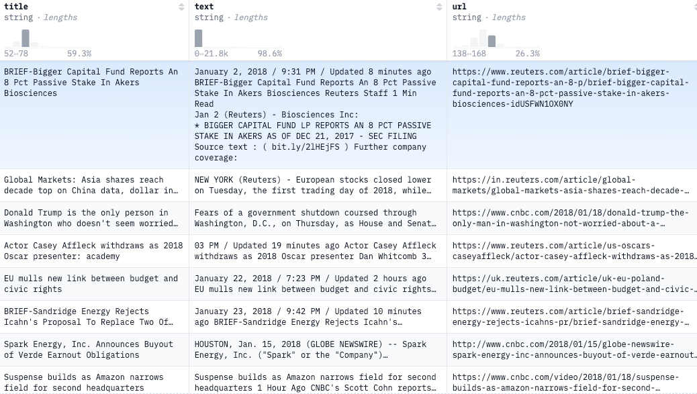
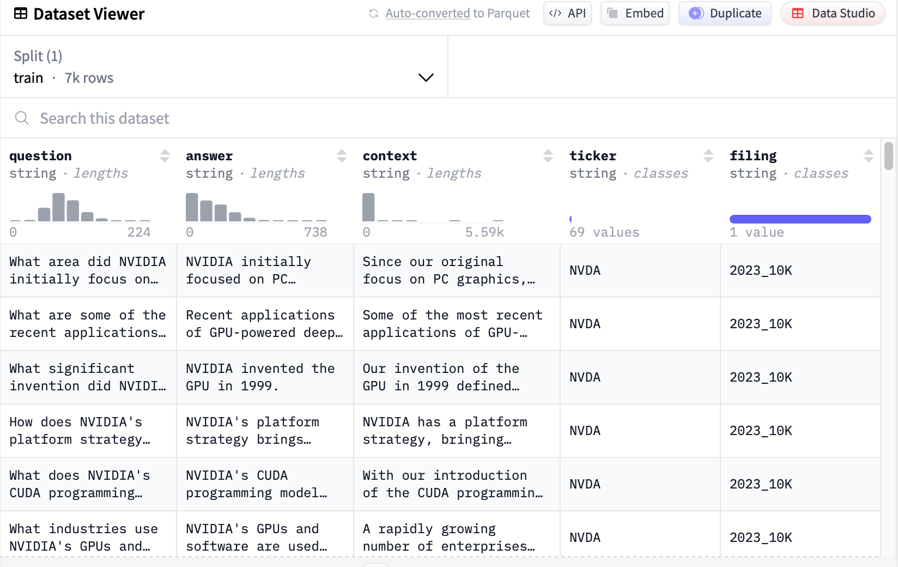
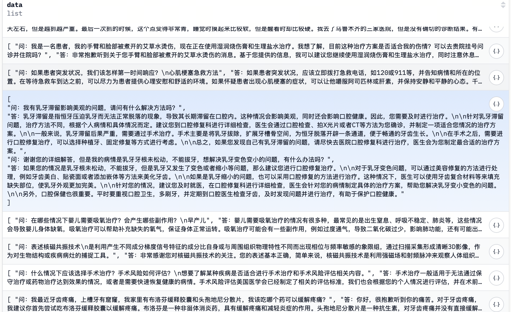
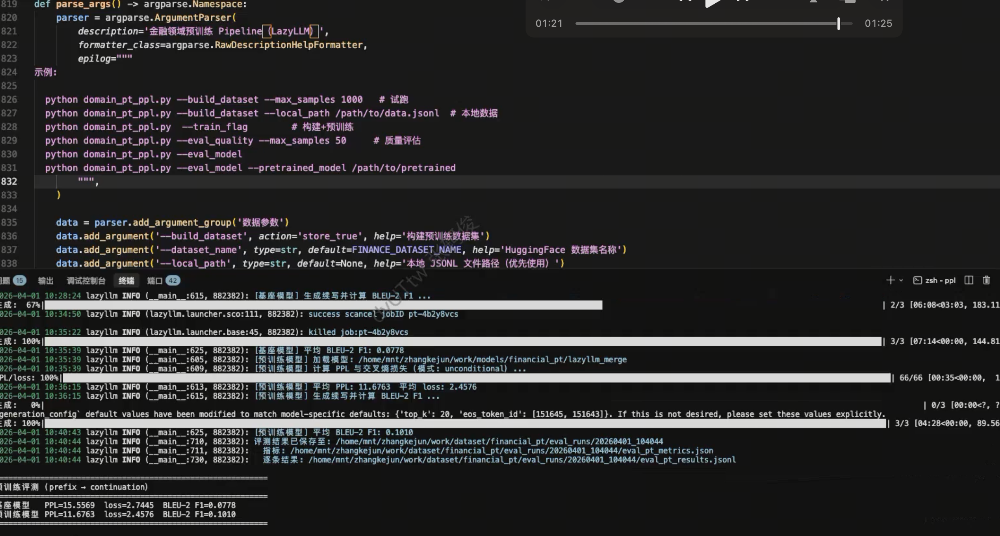
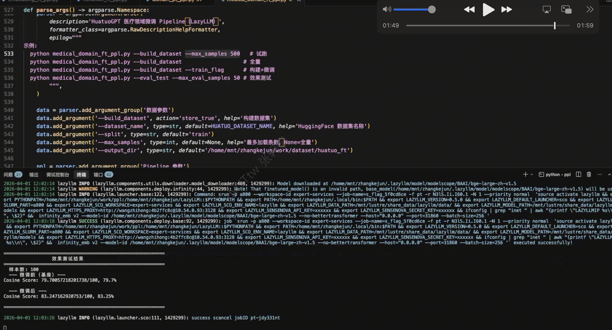

第24课时：行业领域模型实战¶
当你问通用大模型“心肌梗死的典型心电图表现是什么？”、“上市公司年报中的‘非经常性损益’如何计算？”或“如何起草一份有效的房屋租赁合同？”时，
它可能会给出听起来合理但细节错误甚至危险的回答。
原因很简单：通用大模型没有专门学习过医疗、金融、法律等垂直领域的知识。
✅ 本课将手把手教你：如何让一个通用大模型“变身”为行业专家！
聚焦以下核心环节：
- 行业数据集准备：清洗、脱敏、融合知识图谱；
- 继续预训练（CPT）：领域知识注入的训练策略与数据配比；
- 领域指令数据集构建与微调（SFT）：教会模型“按业务逻辑说话”；
本教程面向零基础初学者，用通俗语言 + 关键公式 + 真实案例，让你掌握工业级领域模型训练全流程。
1. 为什么需要行业领域模型？¶
1.1 通用模型的“知识盲区”¶
通用大模型（如 LLaMA、Qwen、ChatGLM）在公开网页上训练，具备广泛常识，但在专业领域存在：
- 知识陈旧：训练数据截止于 2023 年，无法回答 2024 年新药审批；
- 细节错误：混淆“心房颤动”与“室性心动过速”；
- 缺乏结构：不能按法律条文框架组织答案；
- 安全风险：可能泄露训练数据中的患者信息。
其语言先验（language prior）无法准确刻画专业领域中的术语、句式、逻辑结构；直接使用会导致高预测不确定性（即高困惑度）和语义幻觉。
💡 类比：通用模型像“百科全书式大学生”，而行业模型是“持证律师/主治医师/注册会计师”。
1.2 行业模型的核心目标¶
| 目标 | 实现方式 |
|---|---|
| 知识准确 | 注入最新、权威的行业语料 |
| 表达专业 | 遵循行业术语、格式、逻辑 |
| 安全合规 | 数据脱敏、避免幻觉、可追溯 |
| 业务对齐 | 理解真实工作流（如病历书写、财报分析） |
2. 行业数据集准备：从原始数据到高质量语料¶
2.1 数据来源示例¶
| 领域 | 典型数据源 |
|---|---|
| 医疗 | 电子病历（EMR）、医学指南（如 UpToDate）、PubMed 文献、临床试验报告 |
| 法律 | 裁判文书、法律条文、合同模板、律师问答 |
| 金融 | 上市公司财报、研报、招股书、监管文件（如 SEC filings）、财经新闻 |
⚠️ 注意：行业数据往往包含敏感信息（如患者姓名、身份证号、交易金额），必须严格脱敏。
2.2 数据长什么样？¶
法律领域¶
-
Pile-Law
- 来源：The Pile 数据集中的法律子集，包含法院判决、法律评论、法规文本。
- 格式：纯文本（
.txt） - 示例片段：
-
CaseLaw（Harvard Law School）
- 来源：美国联邦与州法院数百万份裁判文书。
- 格式：JSON，含
case_id,court,date,text等字段。 - 示例：
学术/科研领域¶
- S2ORC (Semantic Scholar Open Research Corpus)
- 来源：8100 万篇学术论文，覆盖 CS、医学、物理等。
- 格式：JSONL，每篇含
paper_id,title,abstract,body_text（带段落结构）。 - 示例：
金融领域¶
-
FinGPT
- 来源：上市公司财报、研报、财经新闻。
- 格式：
- 财报：PDF 原始文件 + 结构化 JSON（含
revenue,net_income,EBITDA等字段）； - 研报：Markdown（保留标题、列表、表格）。
- 财报：PDF 原始文件 + 结构化 JSON（含
- 财报 JSON 示例：
-
FiQA（Financial Opinion Mining and QA）
- 来源：金融论坛问答、分析师评论。
- 格式：JSON，含
question,answer,sentiment。 - 示例：
-
Financial Q&A - 10k
- 来源：公司财务报告的10,000个问答对。
- 格式：JSON，含
question,answer,content,ticker,filing。 - 示例：
{ "question": "What area did NVIDIA initially focus on before expanding to other computationally intensive fields?", "answer": "NVIDIA initially focused on PC graphics.", "content": "Since our original focus on PC graphics, we have expanded to several other large and important compu...", "ticker":"NVDA", "filing":"2023_10K" }
医疗领域¶
-
MIMIC-III/IV（Medical Information Mart for Intensive Care）
- 来源：去标识化的 ICU 病历（含生命体征、用药、诊断）。
- 格式：多个 CSV 表（
patients.csv,diagnoses_icd.csv,notes.csv）。 notes.csv示例：
-
PubMed
- 来源：生物医学文献摘要。
- 格式：XML（MEDLINE）或 JSON（via
biopython）。 - JSON 示例：
2.3 工业级数据处理流水线（Pipeline）¶
-
清洗：
- 去除 HTML 标签、乱码、广告；
- 语言过滤（仅保留中文/英文）。
- 代码示例
import re from langdetect import detect def clean_text(text: str, target_lang: str = "zh") -> str: # 1. 去除 HTML 标签 text = re.sub(r"<[^>]+>", "", text) # 2. 保留中英文、数字、基础标点 text = re.sub(r"[^\u4e00-\u9fa5a-zA-Z0-9\s.,;:!?。，；：！？\n\-—()（）]", " ", text) # 3. 多空格归一 text = re.sub(r"\s+", " ", text).strip() # 4. 语言过滤（可选） try: if detect(text) != target_lang: return "" except: return "" return text
-
去重：
- 使用 MinHash 计算文本相似度： $$ \text{sim}(D_1, D_2) \approx \frac{\text{相同哈希值数量}}{\text{总哈希函数数量}} $$
- 相似度 >0.95 判为重复，避免模型成为“复读机”。
- 代码示例
from datasketch import MinHash, MinHashLSH # 初始化 LSH lsh = MinHashLSH(threshold=0.95, num_perm=128) minhashes = {} def add_to_lsh(doc_id: str, text: str): # 分词（简单按空格/字） tokens = list(text) if is_chinese(text) else text.split() m = MinHash(num_perm=128) for token in tokens: m.update(token.encode("utf8")) minhashes[doc_id] = m lsh.insert(doc_id, m) def is_duplicate(doc_id: str) -> bool: m = minhashes[doc_id] results = lsh.query(m) return len(results) > 1 # 自己也在内，>1 表示有重复 # 使用示例 docs = [("doc1", "心肌梗死的治疗..."), ("doc2", "心肌梗死的治疗...")] for doc_id, text in docs: add_to_lsh(doc_id, text) if is_duplicate(doc_id): print(f"{doc_id} 是重复文档，跳过")
-
脱敏（医疗/金融必备）：
- 识别 PII（个人身份信息）：姓名、身份证、病历号；
- 替换为占位符：
[PATIENT_NAME]、[ID_NUMBER]。 - 代码示例
import spacy from spacy.lang.zh import Chinese # 加载中文 NER 模型（需提前安装：python -m spacy download zh_core_web_sm） nlp = Chinese() nlp.add_pipe("ner") # 自定义医疗/金融实体规则 ruler = nlp.add_pipe("entity_ruler", before="ner") patterns = [ {"label": "ID_NUMBER", "pattern": [{"SHAPE": "ddddddddddddddxx"}]}, # 身份证 {"label": "PHONE", "pattern": [{"TEXT": {"REGEX": r"1[3-9]\d{9}"}}]}, # 手机号 {"label": "MEDICAL_RECORD", "pattern": [{"TEXT": "病历号"}, {"IS_DIGIT": True}]}, ] ruler.add_patterns(patterns) def anonymize(text: str) -> str: doc = nlp(text) for ent in doc.ents: if ent.label_ in ["PERSON", "ID_NUMBER", "PHONE", "MEDICAL_RECORD"]: text = text.replace(ent.text, f"[{ent.label_}]") return text # 示例 raw = "患者张三（病历号：MR20240501）电话 13800138000，诊断为心梗。" print(anonymize(raw)) # 输出：患者[PATIENT_NAME]（病历号：[MEDICAL_RECORD]）电话 [PHONE]，诊断为心梗。
-
合成（扩充指令数据）：
- Self-Instruct：用 GPT-4 根据专业文档生成指令-响应对；
- 示例提示：
2.4 LazyLLM 领域数据 Pipeline（与代码对齐）¶
本节与 LazyLLM 源码中的两条主线一致：无标注长文本走继续预训练链路，指令/对话走监督微调链路。对应模块分别为 lazyllm.tools.data.pipelines.domain_pretrain_pipelines 与 domain_finetune_pipelines。
2.4.1 继续预训练：domain_pretrain_pipelines¶
功能开关常量 DOMAIN_PRETRAIN_FEATURES 包含：
| 开关 | 含义 |
|---|---|
field_normalization |
字段映射、多字段拼接、回退字段，统一写入 content_key |
text_normalization |
Unicode 规范化、编码修复、空白归一 |
sensitive_info_cleaning |
电话、邮箱、IP、银行卡等敏感信息替换 |
language_filter |
按目标语言占比过滤文档 |
domain_keyword_filter |
领域关键词命中 / 密度过滤 |
domain_relevance_scorer |
加权关键词得分，低于阈值丢弃 |
ngram_repetition_filter |
N-gram 重复比例过滤，抑制模板化复读 |
build_domain_pretrain_pipeline 按固定顺序串联上述可选项（字段与文本规范化、脱敏为默认开启；语言/关键词/相关性按需开启），最后接 N-gram 重复过滤。
build_text_pt_pipeline 在单一 content_key 上执行「通用预训练清洗包」：空内容、HTML/实体/表情、字符/词/句规模、特殊字符与水印、身份证/JS/Lorem 等启发式过滤、符号比例、停用词与词表多样性、词黑名单、MinHash 去重，以及 TokenChunker 按 min_tokens / max_tokens 切块。
build_text_pt_plus_domain_pretrain_pipeline 将二者组合：先领域增强（build_domain_pretrain_pipeline），再通用 PT 管线；中英文默认的 min_chars / min_words / min_tokens 略有不同（中文阈值更宽松），便于中文语料保留更多片段。
flowchart LR
A[原始 JSON/JSONL] --> B[build_domain_pretrain_pipeline]
B --> C[build_text_pt_pipeline]
C --> D[分块 + 训练用纯文本]
2.4.2 监督微调：domain_finetune_pipelines¶
功能开关常量 DOMAIN_FINETUNE_FEATURES 包含：
| 开关 | 含义 |
|---|---|
normalization |
DatasetFormatNormalizer：多格式数据统一为带 instruction/input/output 的结构 |
adaptive_normalization |
LLMFieldMapper：用 LLM 做字段映射（需传入 options['llm']） |
conversation_expand |
ConversationListExpander：如 HuatuoGPT 的 data 列表拆成多条 QA |
llm_extraction |
LLMDataExtractor + SampleExpander：从长文本抽 QA 等并展开为多行 |
deduplication |
hash 或 minhash（由 options['dedup_method'] 控制） |
augmentation |
query_rewrite / synonym_replace 等（需 augment_methods 与 LLM） |
llm_cleaning |
规则清洗后可选 LLM 清洗（仅当未开启 normalization，避免结构化样本被当字符串清掉） |
output_quality_filter |
对 output 最短长度、输入输出长度比等约束 |
编排要点（build_domain_finetune_pipeline）：
- 可选
merge_context_question：把context与question拼进同一字段（医疗/阅读理解类数据常用）。 - 归一化开启时会跳过纯字符串的
build_text_cleaning_pipeline（源码中会打日志说明），质量过滤作用在拼接后的_filter_text上。 - 过滤类型由
filters_config列表驱动，内置类型包括word_count、char_count、target_language、stop_word、unique_word、null_content、output_min_length、output_input_ratio等。 - 末端
DomainFormatAlpaca/ShareGPT/ChatML/Raw输出到output_key（如formatted_text）。 build_train_test_split_pipeline：TrainValTestSplitter划分 train/validation/test。
flowchart TD
O[可选 merge / conversation_expand] --> N[DatasetFormatNormalizer]
N --> E{llm_extraction?}
E -->|是| X[抽取 + 展开 + 刷新 filter 文本]
E -->|否| C{normalization?}
C -->|否| CL[规则/可选 LLM 清洗]
C -->|是| F[质量过滤]
X --> F
CL --> F
F --> OQ[可选 output 质量过滤]
OQ --> D[可选去重]
D --> A[可选增强]
A --> FM[领域格式化为 Alpaca 等]
辅助构建函数（可按需单独使用）：build_text_cleaning_pipeline、build_source_to_content_pipeline（文件/URL → Markdown → 正文）、build_quality_filter_pipeline、build_llm_extraction_pipeline、build_domain_formatting_pipeline、build_data_augmentation_pipeline。
3. 阶段一：继续预训练（CPT）——注入领域知识¶
3.1 原理：领域自适应（Domain Adaptation）¶
CPT 的目标是让模型适应领域语言分布 \(P_{\text{dom}}(x)\)，而非通用分布 \(P_{\text{gen}}(x)\)。
通过最小化领域语言建模损失：
其中各符号含义如下：
- \(\mathcal{L}_{\text{CPT}}\)：继续预训练的损失函数值；
- \(P_{\text{dom}}(x)\)：目标领域（如医疗、金融、法律）中自然语言文本的概率分布；
- \(x = (x_1, x_2, ..., x_T)\)：一条来自领域语料的完整文本序列，长度为 \(T\)；
- \(x_t\)：序列中第 \(t\) 个 token（词或子词）；
- \(x_{<t} = (x_1, x_2, ..., x_{t-1})\)：在预测第 \(t\) 个 token 前的上下文；
- \(p_\theta(x_t \mid x_{<t})\)：由当前模型参数 \(\theta\) 定义的条件概率，表示模型预测 \(x_t\) 的置信度；
- \(\mathbb{E}_{x \sim P_{\text{dom}}}[\cdot]\)：对从领域分布 \(P_{\text{dom}}\) 中采样的所有文本 \(x\) 取期望（即平均损失）；
- \(\theta\)：待更新的模型参数（通常在通用模型预训练参数基础上微调）。
✅ 效果：调整模型内部表示，使“心肌梗死”“EBITDA”等术语的嵌入更靠近相关概念。
3.2 预训练核心要点速查表（Quick Recap）¶
继续预训练（CPT）是将通用大模型“专业化”的第一步。为帮助读者快速掌握关键要点，现将核心信息整合如下：
| 维度 | 关键内容 | 说明 |
|---|---|---|
| 目标 | 使模型适应领域语言分布 \(P_{\text{dom}}(x)\) | 让“心肌梗死”“EBITDA”等术语的表示更贴近领域语义 |
| 训练目标 | 最小化领域语言建模损失： $\(\mathcal{L}_{\text{CPT}} = -\mathbb{E}_{x \sim P_{\text{dom}}} \left[ \sum_t \log p_\theta(x_t \mid x_{<t}) \right]\)$ |
与通用预训练形式相同，但数据来自领域语料 |
| 数据要求 | 高质量、无标注、纯文本 | 推荐 Markdown 格式，保留标题层级与段落结构 |
| 混合策略 | \(\mathcal{D}_{\text{mix}} = 0.8 \cdot \mathcal{D}_{\text{dom}} + 0.2 \cdot \mathcal{D}_{\text{gen}}\) | 防止灾难性遗忘，80/20 为成熟领域推荐比例 |
| Tokenizer | 通常无需扩充 | LLaMA/Qwen 等 tokenizer 已覆盖大部分专业词汇；仅在含大量新符号（如化学式）时谨慎扩充 |
| 训练配置 | - 学习率：2e-5- Epochs：1–2 - Batch：大 batch（如 512k tokens） - 优化器：AdamW（β2=0.95） |
学习率比初始预训练低 5–10 倍 |
| 评估指标 | 领域困惑度（PPL） | 越低越好；同时监控通用 benchmark（如 MMLU）防止遗忘 |
| 典型效果 | - 领域 PPL ↓30% - C-Eval/CMMLU 得分 ↑15–25% |
模型“看懂”领域文档，为 SFT 奠定知识基础 |
✅ 一句话总结：
CPT 不是重新训练，而是“定向微调语言能力”——用领域语料微调模型，使其“读得懂专业文献”，但还不知道如何回答业务问题（此为 SFT 的任务）。
3.3 关键策略¶
- 混合比例：
为防止灾难性遗忘，混合通用数据：
其中各符号含义如下：
- \(\mathcal{D}_{\text{mix}}\)：混合训练数据集，用于 CPT；
- \(\mathcal{D}_{\text{dom}}\)：领域数据集，包含来自目标领域的高质量文本（如医学指南、财报、法律条文）；
- \(\mathcal{D}_{\text{gen}}\)：通用数据集，通常为原始预训练语料的子集（如 Wikipedia、Common Crawl）或公开通用语料（如 The Pile）；
-
系数 \(0.8\) 和 \(0.2\)：混合比例，表示每 batch 数据中 80% 来自领域数据，20% 来自通用数据；
-
Tokenizer 扩充？
- 通常不需要：LLaMA/Qwen 等模型的 tokenizer 已覆盖大部分专业词汇；
- 例外：若领域含大量新符号（如化学式、代码），可扩充 vocab，但需谨慎（破坏预训练表示）。
3.4 数据集构建¶
- 来源：清洗后的领域语料（如 10 万篇医学文献）；
- 格式：纯文本，按 2048 tokens 切分；
- 规模：建议 ≥1B tokens（7B 模型）。
- 代码示例：构建医学领域 CPT 数据集
import os import json import re from transformers import AutoTokenizer from tqdm import tqdm # Step 1: 初始化 tokenizer（与目标模型一致） tokenizer = AutoTokenizer.from_pretrained("meta-llama/Llama-3-8B") # Step 2: 定义清洗函数（保留中文/英文、数字、基础标点） def clean_text(text: str) -> str: # 去除 HTML / XML 标签 text = re.sub(r"<[^>]+>", "", text) # 仅保留中英文、数字、标点、换行 text = re.sub(r"[^\u4e00-\u9fa5a-zA-Z0-9\s.,;:!?。，；：！？\n\-—()（）]", " ", text) # 多空格归一 text = re.sub(r"\s+", " ", text).strip() return text # Step 3: 遍历原始语料目录，清洗并合并为大文本流 raw_dir = "./medical_corpus_raw/" # 原始文件目录（.txt/.md/.json） output_file = "./cpt_medical.txt" # 输出纯文本 with open(output_file, "w", encoding="utf-8") as fout: for filename in tqdm(os.listdir(raw_dir), desc="Processing files"): filepath = os.path.join(raw_dir, filename) if not filepath.endswith((".txt", ".md", ".json")): continue # 读取文件 if filename.endswith(".json"): with open(filepath, "r", encoding="utf-8") as f: try: data = json.load(f) text = data.get("text", "") # 假设字段为 "text" except: continue else: with open(filepath, "r", encoding="utf-8", errors="ignore") as f: text = f.read() # 清洗并写入 cleaned = clean_text(text) if len(cleaned) > 50: # 过滤过短文本 fout.write(cleaned + "\n\n") # 段落间保留空行 print(f"✅ 原始语料清洗完成，输出至: {output_file}") # Step 4: 按 2048 tokens 切分 # 读取清洗后的大文本 with open(output_file, "r", encoding="utf-8") as f: full_text = f.read() # 按换行/段落切分（保留语义边界） paragraphs = full_text.split("\n\n") # 拼接成 2048-token 块 block_size = 2048 current_block = [] blocks = [] for para in tqdm(paragraphs, desc="Tokenizing and chunking"): if not para.strip(): continue # Tokenize 段落 tokens = tokenizer(para, add_special_tokens=False)["input_ids"] current_block.extend(tokens) # 若超过 block_size，截断并保存 while len(current_block) >= block_size: blocks.append(current_block[:block_size]) current_block = current_block[block_size:] # 保存为纯文本（每块一行，token 用空格连接，LazyLLM 可直接读取） cpt_dataset_file = "./cpt_medical_dataset.txt" with open(cpt_dataset_file, "w", encoding="utf-8") as f: for block in blocks: # 转回文本（保留原始字形） text_block = tokenizer.decode(block, skip_special_tokens=True) f.write(text_block + "\n") print(f"✅ 数据集构建完成！共 {len(blocks)} 块，约 {len(blocks) * block_size / 1e9:.2f}B tokens")
3.5 LazyLLM 实战代码¶
以下示例演示如何用 TrainableModule 串联「微调 → 部署 → 评测」。
import lazyllm
from lazyllm import finetune, deploy, launchers
model = lazyllm.TrainableModule(model_path)\
.mode('finetune')\
.trainset(train_data_path)\
.finetune_method((finetune.llamafactory, {
'learning_rate': 1e-4,
'cutoff_len': 5120,
'max_samples': 20000,
'val_size': 0.01,
'per_device_train_batch_size': 2,
'num_train_epochs': 2.0,
'launcher': launchers.sco(ngpus=8)
}))\
.prompt(dict(system='You are a helpful assistant.', drop_builtin_system=True))\
.deploy_method(deploy.Vllm)
model.evalset(eval_data)
model.update()
TrainableModule来实现：微调->部署->推理:
-
模型配置：
model_path指定了我们要微调的模型，这里我们用Internlm2-Chat-7B，直接指定其所在路径即可；
-
微调配置：
.mode设置了启动微调模式finetune；.trainset设置了训练用的数据集路径，这里用到的就是我们前面处理好的训练集；.finetune_method设置了用哪个微调框架及其参数，这里传入了一个元组（只能设置两个元素）：- 第一个元素指定了使用的微调框架是Llama-Factory：
finetune.llamafactory - 第二个元素是一个字典，包含了对该微调框架的参数配置；
-
推理配置：
.prompt设置了推理时候用的Prompt，注意，这里为了和微调的Prompt中的system字段保持一致，所以开启drop_builtin_system以将原system-prompt给替换为`You are a helpful assistant.`.deploy_method设置了部署用的推理框架，这里指定了vLLM这个推理框架；
- 评测配置：
- 这里通过
.evalset来配置了我们之前处理好的评测集；
- 这里通过
- 启动任务：
.update触发任务的开始：模型先进行微调，微调完成后模型会部署起来，部署好后会自动使用评测集全部都过一遍推理以获得结果；
LazyLLM 除了可以便捷进行模型微调，还提供了专用于领域数据处理的 pipeline。下面以金融领域为例，展示如何使用 LazyLLM 实现完整的继续预训练流程。
数据集简介：示例脚本默认使用 Hugging Face 上的 ashraq/financial-news-articles。原始语料来自 Kaggle 的 US Financial News Articles，经用户 ashraq 整理后发布；全量约 306,242 篇英文金融新闻文章，适合作为财经领域 CPT 的演示语料（可通过 --dataset_name、--local_path 等参数替换为其他来源）。

完整代码见 domain_pt。
train_file = os.path.join(args.output_dir, 'train.json')
eval_file_path = os.path.join(args.output_dir, 'eval.jsonl')
if args.build_dataset:
print('>>> 步骤 1：加载文本数据')
raw_items = load_text_data(
dataset_name=args.dataset_name,
split=args.split,
max_samples=args.max_samples,
content_key=args.content_key,
local_path=args.local_path,
)
print(f'\n>>> 步骤 2：Pipeline 处理（规范化 → 过滤 → 去重 → 分块）')
print(f' 启用功能: {", ".join([k for k, v in enabled.items() if v])}')
result = build_pretrain_dataset(
raw_items=raw_items,
domain=args.domain,
content_key=args.content_key,
output_dir=args.output_dir,
language=args.language,
domain_keywords=args.domain_keywords,
enabled=enabled,
options=options,
eval_seed=args.eval_seed,
eval_ratio=args.eval_ratio,
eval_from_train=args.eval_from_train,
)
train_file = result['train_file']
eval_file_path = result['eval_file']
total_chunks = result['total_chunks']
print(f'预训练数据集构建完成！共生成 {total_chunks} 个分块')
if args.eval_quality:
if not os.path.exists(train_file):
print(f'\n错误：分块文件不存在，请先运行 --build_dataset 生成 {train_file}')
return
print(f'\n>>> 质量评估：分块数据统计')
evaluate_chunk_quality(
chunk_file=train_file,
max_samples=args.max_eval_samples,
output_dir=args.output_dir,
)
if args.train_flag:
if not os.path.exists(train_file):
print(f'\n错误：预训练数据不存在，请先运行 --build_dataset 生成 {train_file}')
return
print(f'\n>>> 步骤 3：执行 LLM 预训练')
run_pretrain(
pretrain_data_path=train_file,
base_model=args.base_model,
train_target_path=args.train_target_path,
num_epochs=args.num_epochs,
per_device_batch_size=args.per_device_batch_size,
learning_rate=args.learning_rate,
gradient_accumulation_steps=args.gradient_accumulation_steps,
cutoff_len=args.cutoff_len,
warmup_ratio=args.warmup_ratio,
ngpus=args.ngpus,
save_steps=args.save_steps,
logging_steps=args.train_logging_steps,
save_total_limit=args.save_total_limit,
train_launcher=args.train_launcher,
sco_partition=args.sco_partition,
sco_resource=args.sco_resource,
)
if args.eval_model:
eval_file = args.eval_chunk_file or eval_file_path
pretrained_path = './models/financial_pt/lazyllm_merge'
if not os.path.isfile(eval_file):
print(f'\n错误：评测集不存在: {eval_file}，请先运行 --build_dataset 或指定 --eval_chunk_file')
return
evaluate_pretrained_model(
base_model_path=args.base_model,
pretrained_model_path=pretrained_path,
eval_jsonl_path=eval_file,
output_dir=args.output_dir,
max_eval_samples=args.eval_max_ppl_samples or MAX_EVAL_SAMPLES_DEFAULT,
max_new_tokens=args.eval_max_new_tokens,
ppl_max_length=EVAL_MAX_LENGTH,
gen_batch_size=EVAL_GEN_BATCH_SIZE,
ppl_mode=args.ppl_mode,
)
if not args.build_dataset and not args.train_flag and not args.eval_quality and not args.eval_model:
print('请指定 --build_dataset / --train_flag / --eval_quality / --eval_model 至少其一')
print('示例：python domain_pt_ppl.py --build_dataset --max_samples 1000')
print(' python domain_pt_ppl.py --eval_model --pretrained_model /path/to/pretrained')
4. 阶段二：监督微调（SFT）——学习业务逻辑¶
4.1 原理：从“续写”变成“问答”¶
通用模型的训练目标是自回归续写：
- \(x = (x_1, x_2, ..., x_m)\)：输入上下文（前文），例如一段文章或对话历史；
- \(y = (y_1, y_2, ..., y_n)\)：模型需要生成的后续文本（下文）；
- \(p_\theta(y \mid x)\)：在模型参数 \(\theta\) 下，生成序列 \(y\) 的条件概率；
- \(\theta\)：模型全部可训练参数（通常在预训练阶段已固定大部分知识）。
SFT 将其转化为条件生成：
- \(\text{instruction}\)：明确的任务指令，例如 “作为一名心内科医生，请解释心肌梗死的治疗原则”；
- \(\text{input}\)：可选的附加上下文（如患者主诉、合同条款），若无则为空；
- \(y\)：专家撰写的标准答案，严格遵循业务规范（如医疗 SOAP 格式、法律三段论）；
- \(p_\theta(y \mid \text{instruction}, \text{input})\)：模型在给定指令和输入下生成标准答案的概率。
✅ 关键：教会模型遵循业务逻辑（如法律三段论、医疗 SOAP 格式）。
4.2 构建优质数据集¶
下面我们以 financial-qa-10K 为例讲解输出处理过程，该数据集仅包含 train 拆分（split），因此需在本地进行训练/验证集划分，以支持模型开发与效果评估。

整个数据构建流程由以下五个核心函数协同完成：
1. load_data(data_path)¶
该函数用于从指定路径加载已保存的 JSON 格式数据集。虽然在当前流程中主要用于调试或二次加载，但其设计保证了数据读取的通用性与可复用性。
def load_data(data_path):
"""Load JSON data from specified file path"""
with open(data_path, 'r') as file:
dataset = json.load(file)
return dataset
2. build_data_path(file_name)¶
为确保数据存储路径的一致性与可维护性，该函数在项目根目录下自动创建 data/ 子目录（若不存在），并返回目标文件的完整路径。
def build_data_path(file_name):
"""Construct data storage path and ensure directory exists"""
data_root = os.path.join(os.getcwd(), 'data')
if not os.path.exists(data_root):
os.makedirs(data_root)
save_path = os.path.join(data_root, file_name)
return save_path
3. build_eval_data(data)¶
评估数据集需保留原始语义结构，便于后续使用标准指标（如 Exact Match、F1 Score）进行自动评测。该函数从原始样本中提取 context、question 和 answer 字段，并统一重命名为 answers（兼容多答案格式）。
def build_eval_data(data):
"""Extract necessary fields for evaluation dataset"""
extracted_data = []
for item in data:
extracted_item = {
"context": item["context"],
"question": item["question"],
"answers": item["answer"] # 直接使用 answer 字段
}
extracted_data.append(extracted_item)
return extracted_data
说明：尽管原始字段名为
answer（单数），此处仍将其映射为answers（复数），以兼容后续可能引入的多参考答案场景。
4. build_train_data(data)¶
训练数据需适配指令微调（Instruction Tuning）范式。为此，我们采用预定义的提示模板 template，将上下文与问题融合为自然语言指令，模型则学习从该指令生成对应答案。
def build_train_data(data):
"""Format training data using predefined template"""
extracted_data = []
for item in data:
extracted_item = {
"instruction": template.format(context=item["context"], question=item["question"]),
"input": "",
"output": item["answer"]
}
extracted_data.append(extracted_item)
return extracted_data
模板示例（假设）：
此设计使模型明确区分“指令”与“输入”，符合主流微调框架（如 LLaMA-Factory、Alpaca 格式）的数据要求。
5. get_dataset(data_name, rebuild=False, test_size=0.1)¶
这是整个流程的主控函数，负责协调数据下载、划分、转换与持久化：
- 若
train_set.json或eval_set.json不存在，或用户显式设置rebuild=True，则从 Hugging Face Hub 加载原始数据集； - 自动检测是否存在
test拆分：若存在，则直接使用；否则从train中按test_size（默认 10%）进行随机划分（固定随机种子seed=42以保证可复现性）； - 分别调用
build_train_data与build_eval_data进行格式转换； - 将结果保存至
data/train_set.json和data/eval_set.json。
def get_dataset(data_name, rebuild=False, test_size=0.1):
"""Get or rebuild dataset from HuggingFace hub
If dataset only has 'train' split, automatically split into train/test sets.
"""
train_path = build_data_path('train_set.json')
eval_path = build_data_path('eval_set.json')
if not os.path.exists(train_path) or not os.path.exists(eval_path) or rebuild:
dataset = datasets.load_dataset(data_name)
if 'test' in dataset:
test_data = dataset['test']
train_data = dataset['train']
else:
split_dataset = dataset['train'].train_test_split(test_size=test_size, seed=42)
train_data = split_dataset['train']
test_data = split_dataset['test']
save_res(build_eval_data(test_data), eval_path)
save_res(build_train_data(train_data), train_path)
return train_path, eval_path
注：
save_res()为辅助函数（未在代码块中展示），用于将 Python 对象序列化为 JSON 文件。
输出结果¶
执行 get_dataset("FinGPT/financial-qa-10K") 后，将在项目目录下生成如下结构：
your_project/
├── data/
│ ├── train_set.json # 指令微调格式，含 instruction/output
│ └── eval_set.json # 评估格式，含 context/question/answers
└── ...
这两个文件可直接用于： - 训练阶段：作为 LLM 微调框架（如 LLaMA-Factory、LazyLLM）的输入； - 评估阶段：配合自定义评测脚本，计算模型在金融问答任务上的准确率。
4.3 常规数据处理 + LazyLLM 实战代码¶
LazyLLM支持微调、部署、推理一条龙，但如果已微调好一个大模型，想直接使用它应该怎么办呢？很简单：其中的base_model不变，用target_path指定微调好的模型路径即可，这里我们先展示如何使用常规数据方法并结合LazyLLM进行模型微调如下所示：
完整代码见 sft_llm。
import os
import lazyllm
model = lazyllm.TrainableModule(model_path)\
.mode('finetune')\
.trainset(train_data_path)\
.finetune_method((finetune.llamafactory, {
'learning_rate': 1e-4,
'cutoff_len': 5120,
'max_samples': 20000,
'val_size': 0.01,
'per_device_train_batch_size': 2,
'num_train_epochs': 2.0,
'launcher': launchers.sco(ngpus=1)
}))\
.prompt(dict(system='You are a helpful assistant.', drop_builtin_system=True))\
.deploy_method(deploy.Vllm)
model.evalset(eval_data)
if mode == 'local_train':
model.update() # Auto: Start fine-tuning -> Launch inference service -> Run evaluation
else:
model.start() # Start inference service
model.eval() # Run evaluation
eval_res = model.eval_result
4.4 LazyLLM 领域数据处理 + LazyLLM 实战¶
下面以医疗领域为例，展示如何用 LazyLLM 做较完整的数据清洗与格式统一，并完成 监督微调（SFT） 全流程。完整代码见 medical_domain_ft。
数据集简介
- 数据形态：HuatuoGPT 医疗问答数据集HuatuoGPT。样本由 患者案例叙述 与 医生侧问答/回复 等内容组成，经
data等字段组织为可解析的文本与对话结构，便于展开为指令微调格式。 - 数据规模：全量约 26 万 条量级文本样本；书中实验为控制算力与迭代成本，常
--max_samples 20000取前 2 万条 参与构建，再按train_ratio/validation_ratio/test_ratio划分训练集、验证集与测试集（全量跑法则去掉max_samples限制即可）。
| 步骤 | 实现要点 |
|---|---|
| 数据加载 | load_huatuo：datasets.load_dataset，可选 max_samples 试跑 |
| 核心 Pipeline | enabled 含 conversation_expand、normalization、deduplication、output_quality_filter；filters_config 使用偏医疗的字符下限与空内容过滤 |
| 微调 | run_finetune：finetune.auto + launchers.remote，Alpaca 三字段写入 trainset |
| 效果对比 | evaluate_llm_effect：基座与微调模型对同一批 prompt 推理，嵌入余弦相似度（默认 BAAI/bge-large-zh-v1.5）对比模型输出与标准答案 |
命令行典型用法：--build_dataset、--build_dataset --train_flag、--eval_test（可与 --finetuned_model_path 指向已训好权重）。
llm = lazyllm.TrainableModule(args.base_model)
train_file = os.path.join(args.output_dir, 'medical_train.jsonl')
test_file = os.path.join(args.output_dir, 'medical_test.jsonl')
if args.build_dataset:
print('>>> 步骤 1：从 HuggingFace 加载 HuatuoGPT-sft-data-v1')
raw_items = load_huatuo(
dataset_name=args.dataset_name,
split=args.split,
max_samples=args.max_samples,
)
print('\n>>> 步骤 2：Pipeline 处理（归一化 → 过滤 → 去重 → 格式化 → 划分）')
paths = build_medical_dataset(
raw_items=raw_items,
output_format=args.output_format,
train_ratio=args.train_ratio,
validation_ratio=args.validation_ratio,
test_ratio=args.test_ratio,
output_dir=args.output_dir,
llm=llm,
)
train_file = paths['train_file']
test_file = paths.get('test_file', test_file)
counts = paths['counts']
print(f'数据集构建完成！train={counts["train"]}, validation={counts["validation"]}, test={counts["test"]}')
finetuned_model = None
if args.train_flag:
if not os.path.exists(train_file):
print('\n错误：训练数据不存在，请先运行 --build_dataset')
return
eval_data = None
if args.eval_test and os.path.isfile(test_file):
eval_data, _ = build_eval_data_from_test(
test_file, args.max_eval_samples, default_instruction=MEDICAL_INSTRUCTION_ZH
)
print('\n>>> 步骤 3：执行 LLM 微调')
finetuned_model = run_finetune(
base_model=args.base_model,
train_data_path=train_file,
output_dir=os.path.join(args.output_dir, 'finetuned_model'),
num_epochs=args.num_epochs,
per_device_batch_size=args.per_device_batch_size,
learning_rate=args.learning_rate,
gradient_accumulation_steps=args.gradient_accumulation_steps,
cutoff_len=args.cutoff_len,
warmup_ratio=args.warmup_ratio,
ngpus=args.ngpus,
eval_data=eval_data,
)
if args.eval_test:
if not os.path.isfile(test_file):
print(f'\n错误：测试集不存在，请先运行 --build_dataset 生成 {test_file}')
return
finetuned_for_eval = finetuned_model
if finetuned_for_eval is None and args.finetuned_model_path:
finetuned_for_eval = args.finetuned_model_path
if finetuned_for_eval is None:
p = os.path.join(args.output_dir, 'finetuned_model')
if os.path.exists(p):
finetuned_for_eval = p
print('\n>>> 效果测试：微调前 vs 微调后（Cosine 语义相似度）')
evaluate_llm_effect(
test_file=test_file,
base_model=args.base_model,
finetuned_model=finetuned_for_eval,
max_eval_samples=args.max_eval_samples,
output_dir=args.output_dir,
default_instruction=MEDICAL_INSTRUCTION_ZH,
)
if not args.build_dataset and not args.train_flag and not args.eval_test:
print('请指定 --build_dataset / --train_flag / --eval_test 至少其一')
print('示例：python medical_domain_ft_ppl.py --build_dataset --max_samples 500')
5. 效果评估¶
为全面衡量微调后大语言模型在垂直领域任务上的性能，本系统设计了一套多维度的自动评估方案。继续预训练（PT） 与 监督微调（FT） 的评估目标不同，应选用不同指标：
| 阶段 | 典型 | 主指标 | 含义 |
|---|---|---|---|
| PT | 3.6 domain_pt_ppl.py 中 evaluate_pretrained_model |
交叉熵损失、困惑度（PPL） | 语言建模是否更贴合领域语料分布 |
| FT | 4.4 medical_domain_ft_ppl.py 中 evaluate_llm_effect |
余弦相似度（CosSim） | 生成答案与参考答案在语义向量空间中是否接近 |
PT 脚本还可报告续写 BLEU-2 F1 等生成类辅助指标；FT 若对接金融问答示例代码（如 sft_llm），可额外使用 Exact Match、Origin Score 等任务相关指标，本节不再展开。
5.1 继续预训练（PT）：交叉熵损失与困惑度¶
定义：PT 阶段模型学习目标为下一词预测。对一条 token 序列 \(x = (x_1,\ldots,x_T)\)，在长度有效的监督位置上平均 负对数似然 即为常用 loss；其指数化为 困惑度 PPL。数值上 loss 越低、PPL 越低，表示模型对领域文本的预测越自信、越一致。
设单条样本在参与反传的 token 位置集合上，模型输出分布为 \(p_\theta\)，真实下一词为 \(x_t\)，则该样本损失可写为：
其中 \(\mathcal{T}_i\) 为第 \(i\) 条样本中计入损失的 token 下标集合（实现上常对 prefix 部分 mask 掉，仅对 continuation 计 loss，即 条件 PPL；也可对整段文本计 loss，即 无条件 PPL，见脚本 --ppl_mode）。
在 \(N\) 条评测样本上，按 token 数加权或按样本平均可得到整体 平均 loss \(\bar{\ell}\)。困惑度定义为：
注意：实现中可能对过大 loss 做截断再取 exp，以避免数值溢出；对比 基座模型 与 CPT 后模型 时应在同一评测集、同一
ppl_mode下进行。
5.2 监督微调（FT）：余弦相似度¶
定义：FT 关注「指令 + 上下文 → 答案」是否对齐参考答案。配套医疗 SFT 脚本将模型输出与标准答案分别送入句向量模型（如 BAAI/bge-large-zh-v1.5），在向量空间比较方向一致性，对措辞变化不敏感。
计算流程：
- 用同一嵌入模型分别编码预测 \(\hat{y}_i\) 与参考答案 \(y_i\)；
- 计算两向量的余弦相似度并可在 \([0,1]\) 上截断；
- 对 \(N\) 条样本取算术平均，得到 平均余弦相似度。
公式：设 \(\mathbf{v}_{\hat{y}_i}\)、\(\mathbf{v}_{y_i}\) 分别为 \(\hat{y}_i\)、\(y_i\) 的嵌入向量，则
值越接近 \(1\)，表示语义越接近参考答案。
5.3 评估流程与产出¶
PT（evaluate_pretrained_model）
- 读取
eval.jsonl中prefix+continuation样本； - 对基座与（可选）CPT 后模型分别前向计算 loss，汇总 平均 loss 与 PPL；
- 可选：以
prefix为提示做续写，与continuation对比得 BLEU-2 F1； - 指标与逐条结果写入
eval_runs/下 JSON / JSONL。
FT（evaluate_llm_effect / calculate_score）
- 构造与训练一致的 prompt 列表，分别用基座与微调模型推理；
- 批量调用嵌入模块，逐条算 余弦相似度，对比微调前后 平均 CosSim；
- 可将明细写入
medical_eval_detail_before.json、medical_eval_detail_after.json等。
5.4 输出结果¶
以下为同一基座 Qwen2.5-0.5B-Instruct 上的示意数值，便于对照阅读。
PT（继续预训练评测）
| 模型 | PPL | loss |
|---|---|---|
| 基座模型 | 15.55 | 2.74 |
| 预训练模型 | 11.16 | 2.45 |

FT（医疗 SFT，余弦相似度）
| 阶段 | Cosine Score |
|---|---|
| 微调前（基座） | 79.70% |
| 微调后 | 83.24% |

¶6. 总结：行业模型训练三步法¶
| 阶段 | 目标 | 关键技术 | 原理支撑 |
|---|---|---|---|
| 数据准备 | 构建安全、高质量、结构化语料 | 脱敏、清洗、知识图谱融合 | 信息完整性 + 隐私保护 |
| 继续预训练 | 注入领域知识，调整内部表示 | 80/20 数据配比、低学习率 | 语言建模目标 \(\mathcal{L}_{\text{LM}}\) |
| 指令微调 | 教会模型按业务逻辑输出 | 专家编写、角色化指令 | 任务对齐 + 知识激活 \(\mathcal{L}_{\text{SFT}}\) |